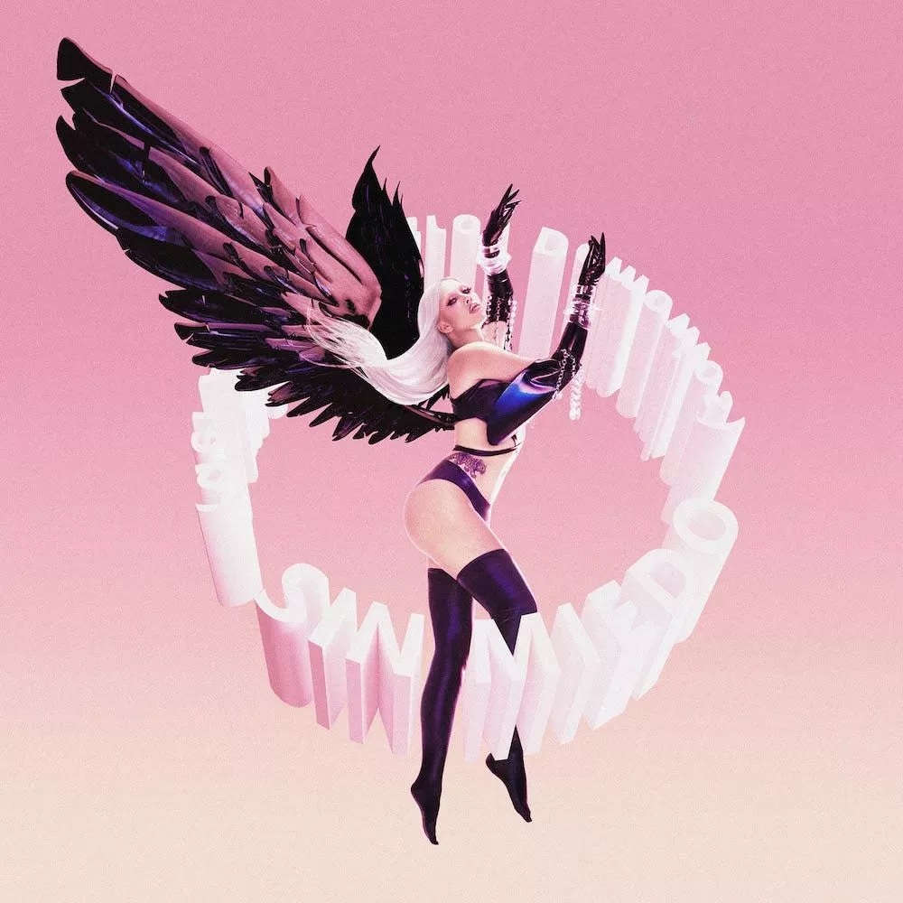
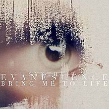

Minha Playlist
-
Música 1
Kali Uchis - Red Moon In Venus
-

Música 2
Kali Uches - Sin Miedo
-

Música 3
Eslabon Armado y Peso Pluma
-

Música 4
Poor Man's Poison
-

Música 5
Ghost - Seven Inches of Satanic Panic
-

Música 6
Correy Taylor - All Hope Is Gone
-

Música 7
Evanescence - Fallen
-

Música 8
Pentakill - Smite and Ignite
-

Música 9
Imagine Dragons ft League of Legends
-

Música 10
Wind Rose - Wintersaga